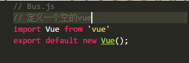
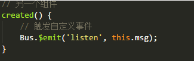

vue组件通信
组件 (Component) 是 Vue.js 最强大的功能之一。我的理解组件就是封装起来可以重复使用的html代码，传统的多页面应用页面之间的数据传递主要是依赖URL传递，或者cookie、localStorage等方式，vue单页面应用是组件化开发，没有页面之间的数据传递，但是存在各个组件之间的数据传递。所以组件之间的数据传递是非常有必要的；而vuex就是专门来处理组件之间数据传递的一个很全面的工具；
单页面应用：
多页面应用：
1.组件通讯
组件通讯包括：父子组件之间的通信和兄弟组件之间的通信。
1)父组件 --> 子组件
a)属性传递
发送：父组件通过对子组件绑定一个属性，这个属性的值将会传递给子组件。

接收：子转件通过vue实例化属性props接收父组件传递过来的数据，有两种接收的方式：
b)子组件直接调用父组件，有两种调用，一是调用父组件$parent 二是调用根组件$root:
父组件信息：

在main.js里面定义的根组件：

子组件获取信息：

2)子组件 --> 父组件
a)通过发送事件和监听事件实现
发送事件（触发事件）：this.$emit(事件名，参数)；

监听事件（事件响应）：

b)父组件直接获取子组件属性和方法
我们可以给子组件起个名字。将名字设置为子组件ref属性的值；

以上都是直接父子组件的传递数据的方法；如果是爷爷传给孙子，就需要爷爷传给爸爸，再传给儿子；如果是兄弟就要把数据传给爸爸再传给兄弟；所以会很麻烦；
2.全局事件总线，用来处理兄弟，祖父祖孙组件之间的通信。
方法就是使用一个空的vue实例（Bus）作为全局事件总线；

各组件可自己定义好组件内接收外部组件的消息事件即可，不用理会是哪个组件发过来；而对于发送事件的组件，亦不用理会这个事件到底怎么发送给我需要发送的组件。
a)定义一个空的vue实例；
b)在需要用到的地方引入Bus.js；
监听自定义事件

触发自定义事件
